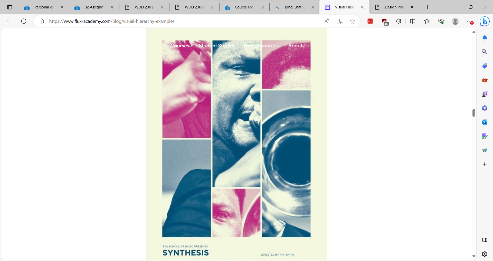
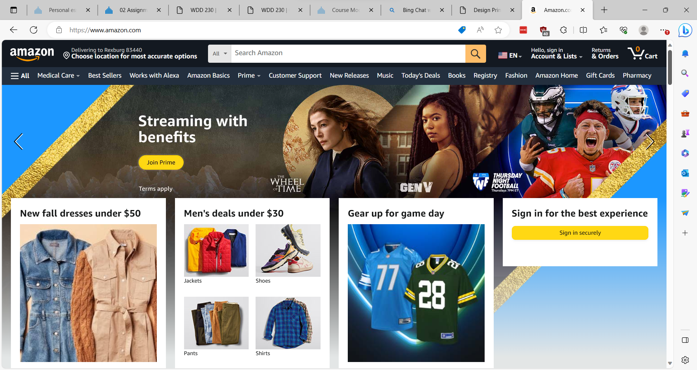
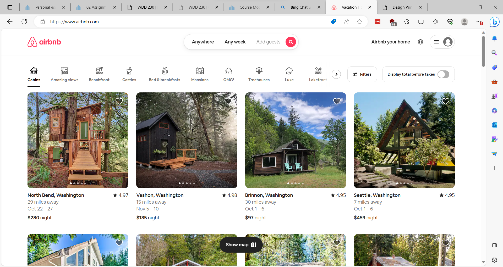

Visual Hierarchy
Flux Academy This poster uses visual hierarchy to arrange elements in order of importance. The different scale allows the main focal point to be the collage of photos in the center. No one image is more important than the other and when the images are all put together with different colors, it create a new photo that is obviously the main focus.
Hick's Law
Amazon Hick's Law is a design principle that states that the more choices a person is presented with, the longer the person will take to make a decision. Amazon's website uses a simple but intuitive navigation menu that helps users to find what they are looking for quickly and efficiently. If you are signed in to the website, it also will suggest products for you based off of previous purchases.
PARC: Alignment
Airbnb The Alignment principle states that every element on a page should have a visual connection with another element. It'd important to have all elements visually connected to create an organized design. Airbnb's website uses alignment to create a structured layout. The search bar and filters are aligned on the left side of the page, while the search results are displayed in a grid format.